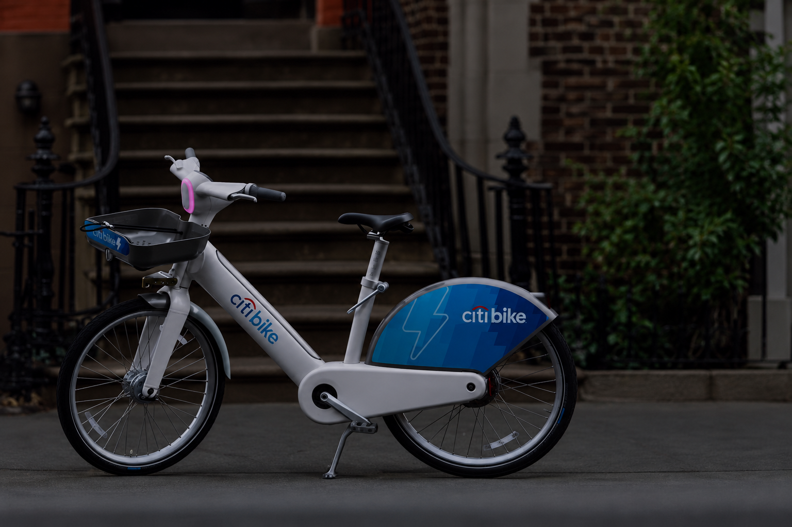
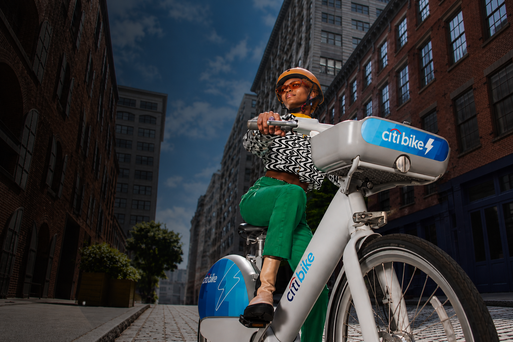
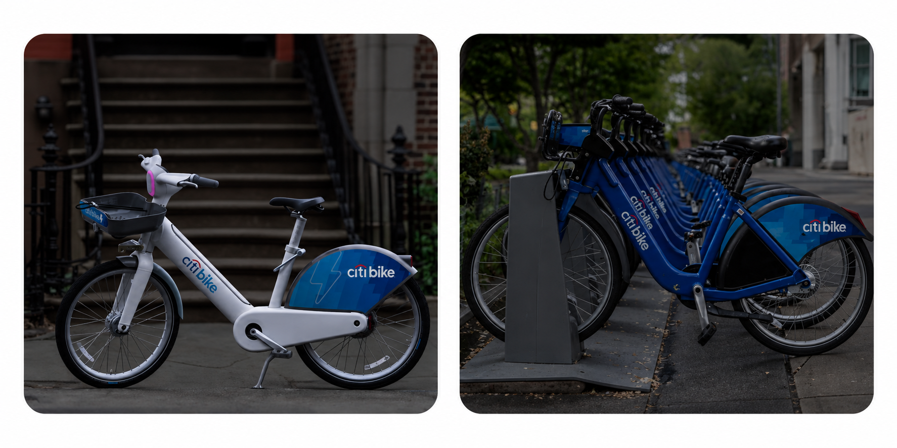

Citi Bike System Data
What we use: Departure & arrival timestamps, start & end station names

SWIFT combines a week of trip history with live station data that will soon run out of bikes or free docks.
Open the mapWe calculate typical hourly net flow for every station across weekdays and weekends.
SWIFT pulls real-time bike and dock counts directly from Citi Bike’s live GBFS stream.
We apply expected hourly flow to live station counts to flag docks likely to empty or overfill within 60 minutes.
Transparent, reproducible inputs powered by Citi Bike’s public data feeds.

What we use: Departure & arrival timestamps, start & end station names

Station coordinates, total dock capacity, real-time bike & dock counts
See which Citi Bike stations are about to run empty or overfill in the next 60 minutes.
Open Full-Screen Map